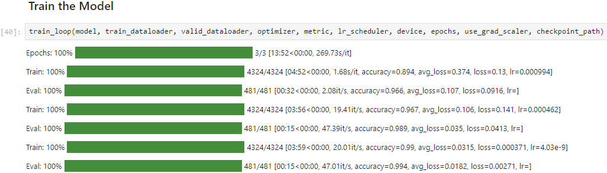

Testing Intel’s Arc A770 GPU for Deep Learning Pt. 4
- Introduction
- Getting the Extension Running on Windows
- Training Image Classification Models
- Generating Images with 🤗 Diffusers
- Training YOLOX Object Detection Models
- Reproducibility Issues on Windows
- Closing Thoughts
Tutorial Links
- Getting Started with Intel’s PyTorch Extension for Arc GPUs on Ubuntu: This tutorial provides a step-by-step guide to setting up Intel’s PyTorch extension on Ubuntu to train models with Arc GPUs
- Getting Started with Intel’s PyTorch Extension for Arc GPUs on Windows: This tutorial provides a step-by-step guide to setting up Intel’s PyTorch extension on Windows to train models with Arc GPUs.
Introduction
In Part 3 of this series, I tested the Arc A770 with Intel’s PyTorch extension by training style transfer models and performing inference with Stable Diffusion using the 🤗 Diffusers library.
Training time for the style transfer models was approximately 19% slower than a Titan RTX. However, there was an over 2.6x performance gap in inference speed for Stable Diffusion 2.1 between the two GPUs. The testing environment for the Titan RTX used PyTorch 2.0, while the Arc GPU used PyTorch 1.13. At the time, I thought the different PyTorch versions might account for the increased performance gap.
Since then, Intel has released a version of the extension for PyTorch 2.0 and added support for native Windows.
This post covers my experience getting the extension running on native Windows and my initial findings for training and inference on both Windows and Ubuntu.
The results in this post are with version 2.0.110+xpu of Intel’s PyTorch extension.
Getting the Extension Running on Windows
Getting the extension to work on native Windows was a bit of a hassle, but the final process is relatively straightforward. However, the storage requirements for the oneAPI toolkit and Visual Studio, which the oneAPI toolkit depends on, are noteworthy. The required packages from the oneAPI toolkit take up approximately 13 GB, and Visual Studio also requires a decent amount of storage space.
As with Ubuntu, the extension requires us to activate the oneAPI environment for each Command Prompt session. The Windows version of the oneAPI toolkit contains a batch file, which makes it easy to initialize the environment.
One issue that took a little while to resolve was that I kept getting the following error when trying to execute models in PyTorch:
RuntimeError: Native API failed. Native API returns: -997 (Command failed to enqueue/execute) -997 (Command failed to enqueue/execute)Eventually, I discovered that I needed to disable the iGPU in the Windows Device Manager for PyTorch to use the Arc GPU. The extension detects the Arc GPU and the iGPU but only seems to work with the first GPU it detects. Manually setting PyTorch to use the second xpu device does not work. Deactivating the iGPU appears to be the only way to make the Arc GPU the first.
Intel does not currently provide a precompiled version of torchvision for use with the extension. You can install torchvision by compiling it from the source code. However, compiling takes a long time, and the standard version of torchvision from Pip performed the same in my testing. Also, there seems to be a compatibility issue with the latest version of oneAPI (2023.2) and the latest version of Visual Studio 2022 that causes the compilation process for the extension to fail. I was able to compile it using Visual Studio 2019.
I also discovered that setting the IPEX_XPU_ONEDNN_LAYOUT environment variable to 1 provides similar performance improvements on Windows as on Ubuntu.
I provide detailed instructions for setting up the extension on Windows in a dedicated post:
- Getting Started with Intel’s PyTorch Extension for Arc GPUs on Windows: This tutorial provides a step-by-step guide to setting up Intel’s PyTorch extension on Windows to train models with Arc GPUs.
Training Image Classification Models
First, I tested performance with the image classification notebook I used previously. Training times on Ubuntu were within a few percentage points of version 1.13.120+xpu of the extension. The new version supports Python 3.11, but there were no notable performance improvements over Python 3.10. On the contrary, training time was consistently slightly slower (a few seconds per epoch) with Python 3.11 compared to Python 3.10.
The total training time for the image classification notebook was approximately 13% slower on native Windows than on Ubuntu.

That is a worthwhile improvement over the 34% performance gap between WSL and native Ubuntu.
The performance gap between Windows and Ubuntu is about the same as what I’ve come to expect with Nvidia GPUs. PyTorch on native Windows tends to be slower than Ubuntu, and Python multiprocessing takes longer to start on Windows.
The final validation accuracy was identical on Windows and Ubuntu.
Generating Images with 🤗 Diffusers
Next, I tested the inference speed for Stable Diffusion 2.1 with the Hugging Face Diffusers notebook I used in part 3. Inference speed when using bloat16 is approximately 25% faster at 7.45 it/s than with version 1.13.120+xpu. That is still less than half the speed with the Titan RTX at 15.76 it/s.
Using float16 has the same inference speed, but the model produces NaN values. The torch compile() method seems to expect CUDA to be enabled, and the compiled model throws an error when I try to use it.
There was no notable difference in inference speed between Windows and Ubuntu.
Training YOLOX Object Detection Models
Last, I tried to run the training notebook for my recent YOLOX object detection tutorial. This notebook was the only one that did not work as expected.
First, I had to replace some view operations in the loss function with reshape operations to handle non-contiguous data.
The training code ran with those changes, but the loss decreased much more slowly than on Nvidia GPUs and never reached usable performance.
I tested inference performance with model checkpoints trained on my Nvidia GPU and got identical inference predictions, so the issue does not appear to be with the model itself. The training code also achieved usable accuracy when using the CPU.
Training time was about 11 minutes for a single pass through the training set on the Arc GPU. For reference, the same takes about 2 minutes on an RTX 4090.
I needed to replace the same view operations with reshape operations in the loss function for the YOLOX training code on Windows and had the same (lack of) training results as on Ubuntu. The training loop also took several minutes to get going. The extension and Python’s multiprocessing seem to contribute to this slow start time.
Reproducibility Issues on Windows
When I first got the extension working on Windows, I had different results with the YOLOX training notebook and the Stable Diffusion inference notebook.
The YOLOX notebook produced a model that was comparably accurate to one trained on Nvidia GPUs, and the Stable Diffusion notebook was faster at around 9 it/s. That is notably faster than my results on Ubuntu.
However, when I uninstalled and reinstalled everything related to the extension, I got results comparable to those on Ubuntu. I have since been unable to reproduce my initial results on Windows.
I might previously have had something installed that was not part of the setup process for the extension that caused the different behavior. If that is the case, I have been unable to identify it.
Closing Thoughts
I’m glad we now have the option to run PyTorch on Windows with the Arc GPUs without WSL. The performance gap between native Windows and Ubuntu does not seem too bad either.
However, the fact the YOLOX training notebook does not reach usable performance on the Arc GPU is incredibly disappointing and concerning. That it temporarily worked on Windows only makes it more frustrating. I’d honestly rather it just fail outright and throw an error. That way, I would at least have a better idea of what is causing the problem.
It’s quite the opposite of how I expected things to turn out. I thought the first Windows version of the extension would have more problems and that the YOLOX training code would work without issue.
- I’m Christian Mills, a deep learning consultant specializing in computer vision and practical AI implementations.
- I help clients leverage cutting-edge AI technologies to solve real-world problems.
- Learn more about me or reach out via email at christian@christianjmills.com to discuss your project.